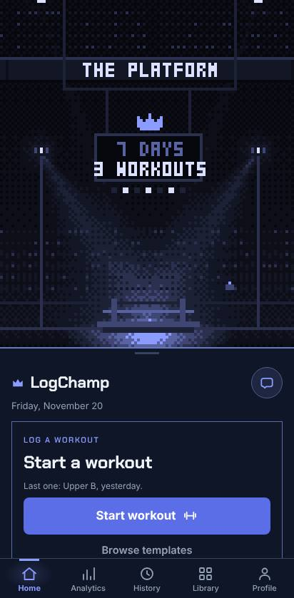
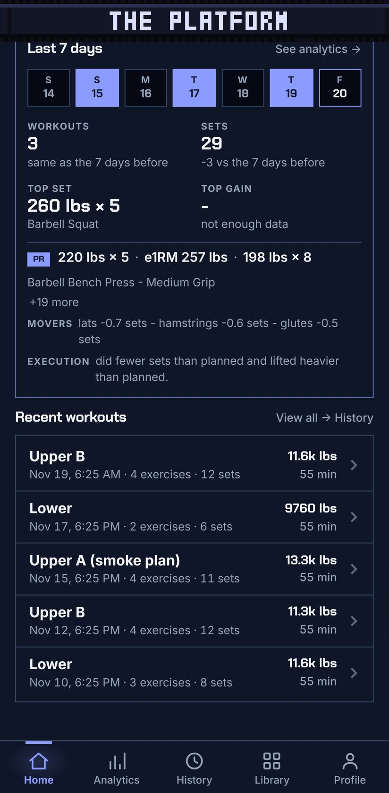
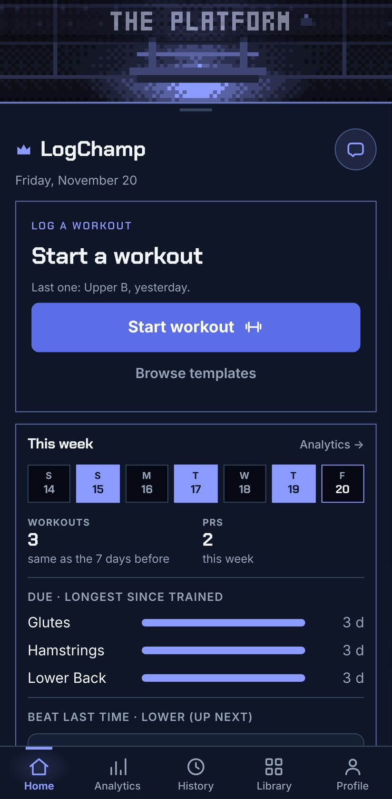
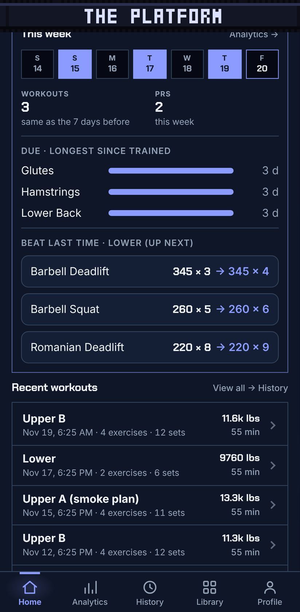
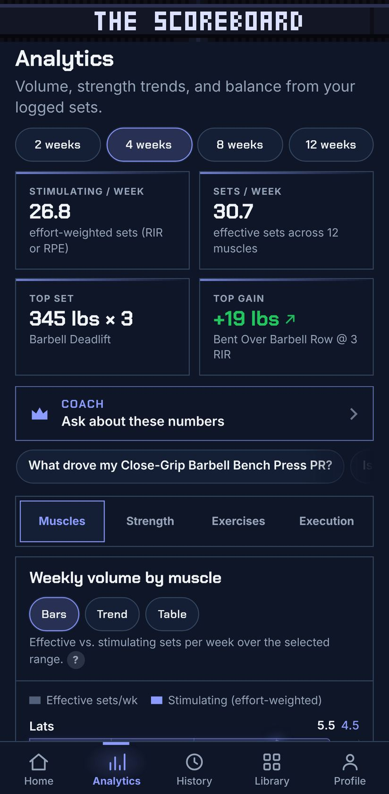
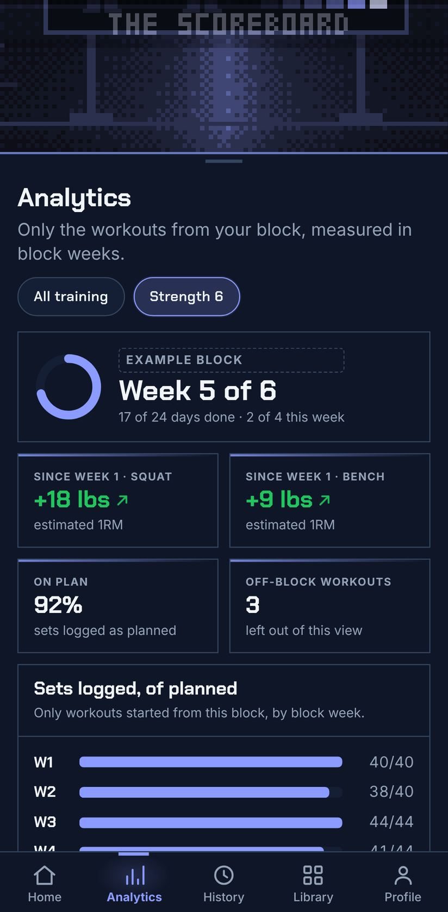
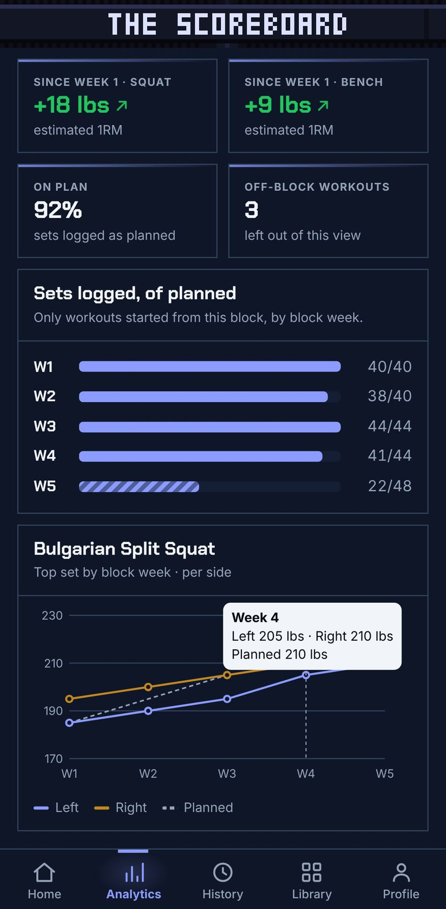

Every frame here is a screenshot of the real LogChamp app running in this session against a seeded test account, so the numbers are test data, not yours. The arena is the actual engine with the new room layout prototyped in. The new Home card and block analytics are mock-ups placed into the live pages with the app's own styles. Cursor gets these images and the arena prototype as its reference.

Drag left on the phone to go to the next tab, as you would in the app. Each frame was taken mid-swipe, with the page riding under the finger. Switch to Today to feel the old walk: the room stays still into Analytics, goes backward into History, then crosses the whole room to Library.
It stands on the floor where the coach's corner was. Arriving, the view the page is on charges in (here the muscle map). From a distance it shows the weekly sets.
The board over the platform no longer opens up for Analytics. It shows Home's faces, and the coach's answers when the coach page is open.
The home crowd now rises from the right of the room toward its back wall, so walking from the Scoreboard you meet the front row first.
Top set and Top gain leave Home (Analytics keeps them). In their place: PRs this week, the muscles you're due to train, and the last top set for each lift in your next workout with one small step up. The rest of Home is untouched.



Muscles ranked by days since you last trained them, from the engine's existing daysSinceLast. The test account trained everything recently, so its bars are all full. Yours would read Triceps 23 d, Biceps 20 d, Middle back 14 d.
For the next workout: the block's Up Next day, or else the template you run most. The last top set per lift, and the next step is one more rep.
A scope switch replaces the range chips: All training, or the block's name. In block scope everything counts only that block's workouts and reads in block weeks. The test account has no block, so these numbers are examples.



The ring shows the block week; "Sets logged, of planned" fills one bar per week, with the current week hatched until it's done.
Top set by block week, left and right as their own lines, the planned load dashed underneath, and a crosshair tooltip. Same chart motion as Analytics.
"Off-block workouts" counts what's left out, so you can see that the view is filtered. The All training view is unchanged.
| Block | Reference | Status of the reference |
|---|---|---|
| BL1 Room in tab order | The arena prototype diff, plus the swipe frames above | Runs in the app needs cleanup and tests |
| BL2 Home "This week" | Home mock-ups above | Mock-up layout and copy to match |
| BL3 Block summary API | The plan page's contract | Spec only |
| BL4 Block scope on Analytics | Block mock-ups above | Mock-up wired to BL3 |
These images and the arena prototype go into the repo at docs/design/mocks/block-lens/ so every task block can point at them.